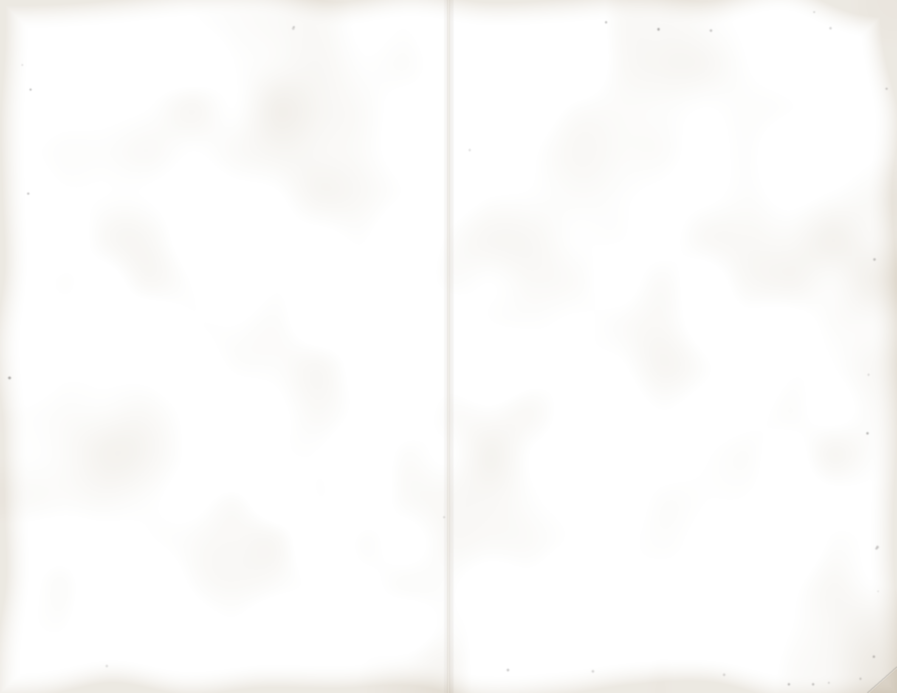

PLEASE PATRONIZE OUR ADVERTISERS
They make this bulletin possible. Tell them you saw it here.
THE BROTHERS’ BAKERY
Bread, rolls, focaccia and cannoli. The ovens are downstairs. Sliced to order, carefully.
Open 6 AM. Tel. 555-0163
C. Castorini
Plumbing and Heating. Boilers, baths and kitchens. Copper pipe? Ask us why.
Licensed. Tel. 555-0137
Kings Travel
Flights to Palermo, Rome and all of Italy. Passports arranged.
Ask for Angela. 555-0148
DeMarco Jewelers
Engagement rings, wedding bands, watch repair.
No ring? See us first.
Carmela’s Salon
Cut, set and color. We cover gray. Walk-ins Tuesday to Saturday.
Tel. 555-0172
GOWNS BY ADELE
Evening dresses and coats, and shoes to match. Alterations ready by Friday.
Tel. 555-0126
Formal Wear
Tuxedo rental for weddings, proms and the opera. Shoes and studs included.
Fittings nightly. 555-0181
PUGLIESE PORK STORE
Veal and chicken cutlets pounded while you wait. Sweet and hot sausage made daily.
Tel. 555-0155
Corner Wines & Liquors
Asti Spumante by the case for engagements. Party orders delivered.
Tel. 555-0114
Tedeschi Funeral Home
Family owned since 1921. Chapel and private parking.
Day or night. 555-0102
For space on this page call the rectory.Church Press, Brooklyn, N.Y. 1987
St. Cecilia’s Church
BROOKLYN, NEW YORK

Patroness of musicSUNDAY BULLETINVol. XXXIV, No. 9
MASSES
Saturday vigil 5:30 PM
Sunday 7:30, 9, 10:30 (Italian) and noon
Weekdays 7 and 8 AM
CONFESSIONS
Saturday 3:30 to 5 PM, or by appointment.
RECTORY
Msgr. Vincent Amato, Pastor
Rev. Peter Kelleher
Office open 9 to 5 for baptisms, weddings and sick calls.
Tel. 555-0119
